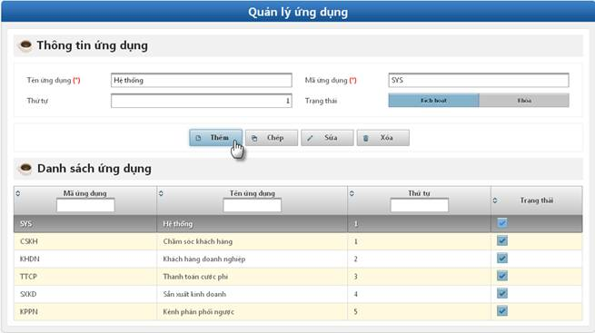

- Mục đích: Cho phép khai báo các ứng dụng của hệ thống
- Bước 1: Click vào Quản lý ứng dụng
Hình 24: Màn hình quản lý ứng dụng
- Bước 2: Thực hiện các chức năng Thêm/Sao chép/Sửa/Xóa.
· Thêm chức năng
ü Mục đích: Cho phép thêm mới các chức năng cho hệ thống.
ü Bước 1: Click vào nút Thêm.

Hình 25: Màn hình thêm ứng dụng hệ thống
ü Bước 2: Nhập đúng và đầy đủ dữ liệu các trường bắt buộc:
Ø Tên ứng dụng: Nhập tên của ứng dụng
Ø Mã ứng dụng: Mã của ứng dụng
Ø Thứ tự: Thứ tự hiển thị ứng dụng trên giao diện quản lý chức năng.
Ø Trạng thái: Trạng thái của ứng dụng. Gồm 2 chức năng: Kích hoạt và Khóa( không được hiển thị trên giao diện).
ü Bước 3: Click vào nút Đồng ý: Thông báo thêm mới thành công và lưu vào CSDL
· Sao chép
ü Mục đích: Cho phép sao chép thông tin ứng dụng của hệ thống.
ü Các bước thực hiện: tương tự chức năng Thêm mới.
· Sửa
ü Mục đích: Cho phép sửa thông tin về ứng dụng của hệ thống.
ü Bước 1: Click vào 1 ứng dụng trên giao diện à Click vào nút Sửa.
Hình 26: Màn hình sửa thông tin ứng dụng của hệ thống
ü Bước 2: Thực hiện sửa thông tin ứng dụng của hệ thống: tương tự như Thêm mới
ü Bước 3: Click vào nút Đồng ý
· Xóa
ü Mục đích: Cho phép xóa các ứng dụng của hệ thống
ü Bước 1: Click vào 1 bản ghi à Click vào nút Xóa
ü Bước 2: Hộp thoại thông báo xác nhận xóa
Hình 27: Màn hình xác nhận xóa
ü Bước 3: Xác nhận xóa
Ø Nút Có: Xác nhận xóa chức năng
Ø Nút Không: Hủy bỏ thao tác xóa
-